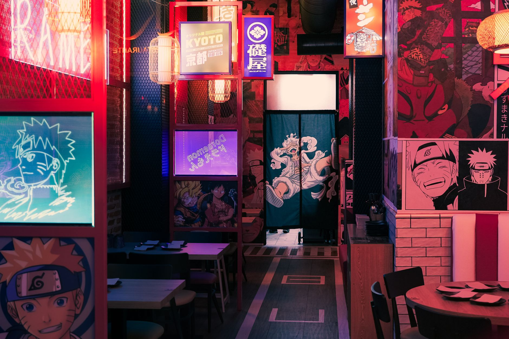
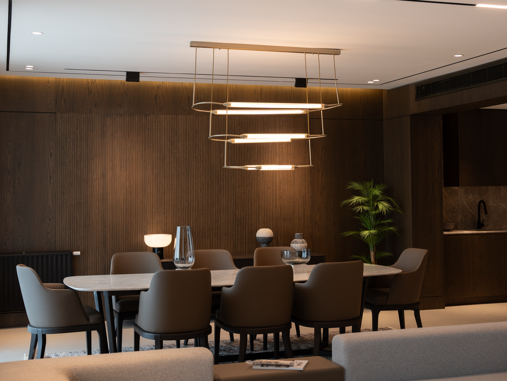
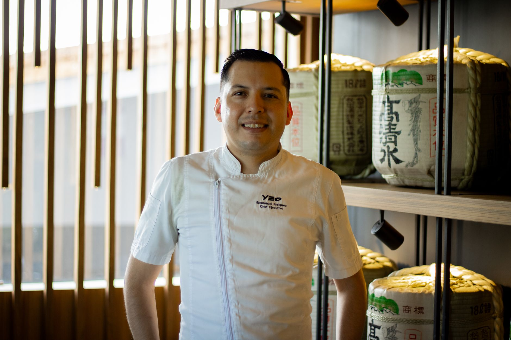

RAW PERFECTION
Where 300-year Edomae mastery meets architectural geometry.
A Dialogue of Time,
Blade & Temperature
Rooted in the Japanese aesthetic of Wabi-Sabi (finding beauty in simplicity and imperfection) and Ma (the intentional power of negative space).
Ephemeral Seasonality
Every species arrives at peak umami for merely two to three weeks each year. Sourced daily from generational line-caught dayboats across Honshu and Hokkaido.
240-Layer Blade Precision
From the Ikejime humane harvest to custom Damascus sashimi steel, micro-diamond scoring breaks down muscle fibers for immediate melt-in-mouth richness.
The Soul of Shari Rice
Koshihikari rice cooked in mountain spring water, seasoned with 10-year aged red sake lees vinegar (Akasu), calibrated strictly to body temperature (36.5°C).
Ikejime Line-Caught Harvest
Spinal cord deactivation at sea in Honshu waters preserves pristine cellular integrity and umami freshness.
The Architecture of Stillness
Crafted from 300-year-old Yoshino Hinoki cypress wood, volcanic basalt stone, and acoustic paper lanterns.

The Hinoki Omakase Counter
An uninterrupted view of the master's blade craft. Pieces served directly to guests within 8 seconds of pressing.
Reserve Counter Seats
The Kyoto Pavilion Suite
Enclosed by hand-woven washi screens and a private Japanese rock garden view. Ideal for confidential executive dinners.
Reserve Private SuiteReserve Your Seat at the Counter
Strictly limited to 24 guests per evening to preserve the highest caliber of personalized gastronomy.
Select Dining Atmosphere:
Choose Date, Seating & Party Size:
Guest Contact Information:

Master Kenji Takahashi
高橋 健二
"The knife is not a tool to cut fish; it is a brush that paints taste onto time. You do not force nature — you listen to the ocean's whisper."
Born in Shizuoka and trained for over 28 years under legendary Ginza shokunin masters, Chef Kenji Takahashi founded ENSON to realize a sanctuary where Edomae rigor meets modern architectural restraint.
Finding ENSON
Located in the quiet backstreets of Ginza 6-Chome, tucked behind a discreet cedar wood noren curtain.
Dinner (2 Seatings): 18:30 & 20:45 (Tue – Sun)